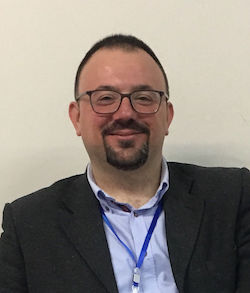

About Me

I graduated from Istanbul University, ELT Department in 2002. I taught English and Turkish (as a foreign language) during my undergrad years. After I graduated, I began to work as an English and drama teacher in a private school. In 2003, I resigned from the high school and began tutoring Turkish as a foreign language at IH (International House) and later at EF (English First). Meanwhile, I also worked as a freelance translator (Eng-Tur and Tur-Eng). Since 2005, I have been working as a research assistant at Yıldız Technical University, Faculty of Education, Foreign Languages Education Department. Apart from my departmental duties, I taught Turkish to ERASMUS students in TILC (Turkish Intensive Language Course) in 2006, organized by Foreign Languages Dept. under the body of EU office of the university and gave undergrad classes. During the 2009-2010 academic year I taught Turkish at the University of Georgia, Athens, GA as a Fulbright FLTA. I have an MA degree in Teaching Turkish as a Foreign Language and a PhD degree in Linguistics with a focus on lexicography.
My research interests are as follows:
- Lexicography
- Linguistics
- Corpus Linguistics
- Computational Linguistics
- Foreign Language Teaching
- Teaching Turkish as a Foreign Language
- Technology